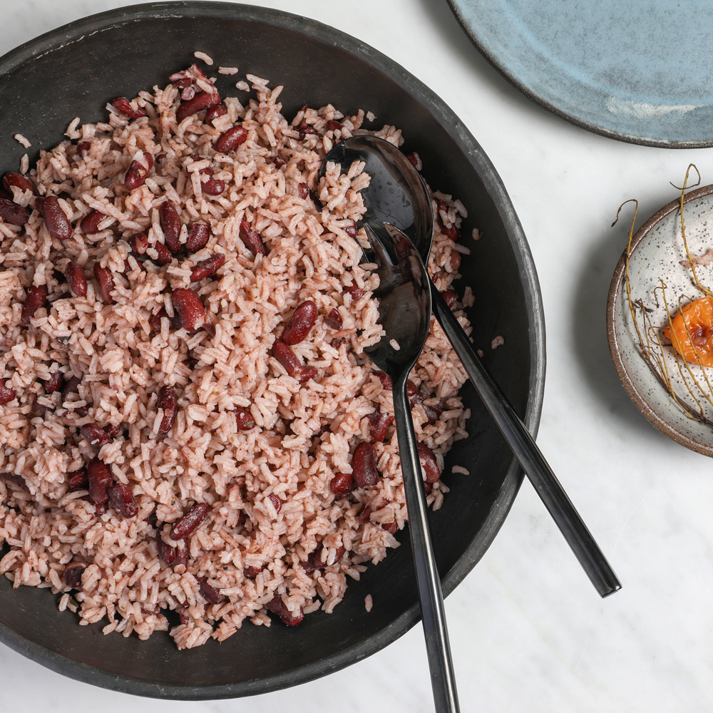

Rice and Peas
 Jamaican Rice and Peas, just like my Grandmother makes
1 cup dried kidney beans- rinsed, soaked overnight and drained
3 cups water
1 small onion, finely chopped
2 scallions, finely chopped
3 garlic cloves, minced
5 allspice berries
5 thyme sprigs
1 scotch bonnet pepper
1/2 teasoon grated fresh ginger
Kosher salt
Black Pepper
One 13.5 Oz can unsweeted coconut milk
2 cups long-grain white rice
Steps
- In a large saucepan, cover the beans with the water and bring to a boil over moderately high heat. Stir in the onion, scallions, garlic, allspice, thyme, Scotch bonnet, ginger, 2 teaspoons salt and 1/2 teaspoon pepper. Stir in the coconut milk and bring to a simmer. Cover and simmer over low heat until beans are tender, about 1 hour; adjust the heat as necessary to maintain a gentle simmer.
- Stir in the rice, cover and simmer over low heat until the rice is tender and the liquid is absorbed, about 30 minutes. Remove from the heat and let steam for 10 minutes, then discard the thyme stems, allspice berries and Scotch bonnet. Using a fork, fluff the rice and beans and season with salt. Serve hot.